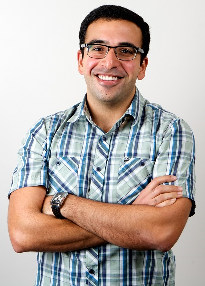

|
 Recent News
|
About MeI am currently the Viterbi Fellow of Digital Medicine at the Scripps Translational Science Institute, where I am kick-starting new research and engineering efforts related to the use of wearable and passive sensing devices in healthcare. As the first engineer to be working on mHealth related efforts at STSI, I work closely with a team of physicians and statisticians across STSI and the Scripps Health hospital system and provide broad technical guidance to both ongoing and planned projects. I believe that patient collected data, from outside the clinical setting, will play a major role in ensuring that the future of medical care is both scalable and affordable. My research focuses on the development of new sensing devices (particularly those related to air quality and respiratory health monitoring) and analytical techniques for turning the data collected by everyday people, using consumer devices, into actionable information for physicians. I completed my PhD studies in the Computer Science and Engineering Department at the University fo California, San Diego in 2015. I was advised by William Griswold. I graduated from the University of California, Los Angeles in the Spring of 2009 with a degree in Computer Science. While at UCLA, I was a CENS Intel Scholar and did research at the Center for Embedded Networked Sensing. During graduate school, I primarily worked on two large research efforts. Much of my dissertation was based on my work on APE, or Annotated Programming for Energy-efficiency, an annotation language and middleware runtime service that eases the development of energy-management policies for use in Android applications. Much of this work was motivied by previous work on the CitiSense project, which tracked individual exposure to air pollution through an complete, end-to-end monitoring system: a body-worn sensor board, a mobile phone application for presenting feedback to users, and a back-end server for presenting personal exposure history and further analysis. |